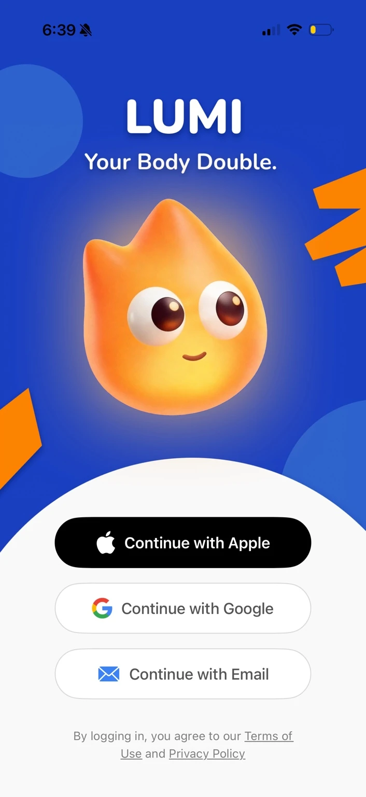
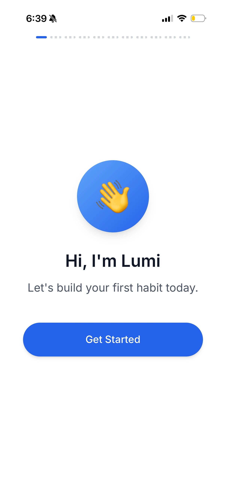
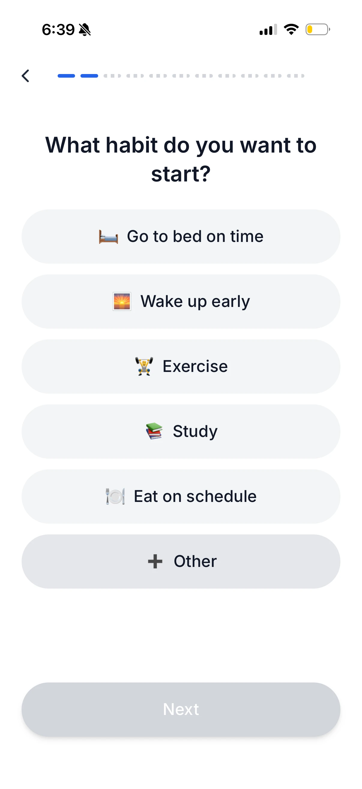
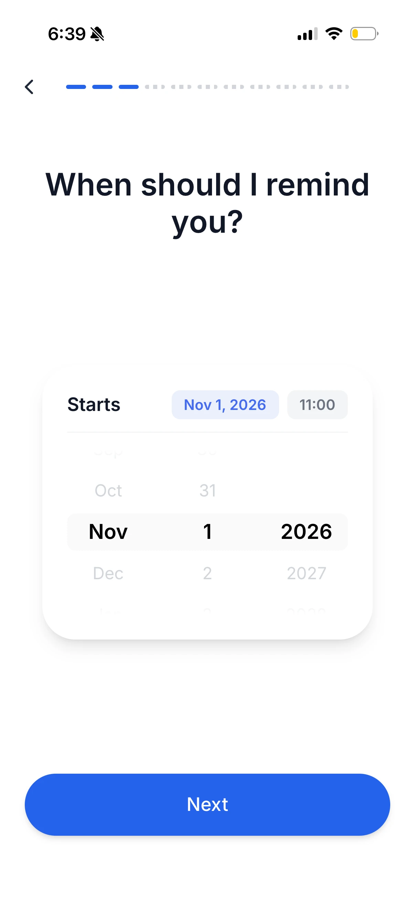
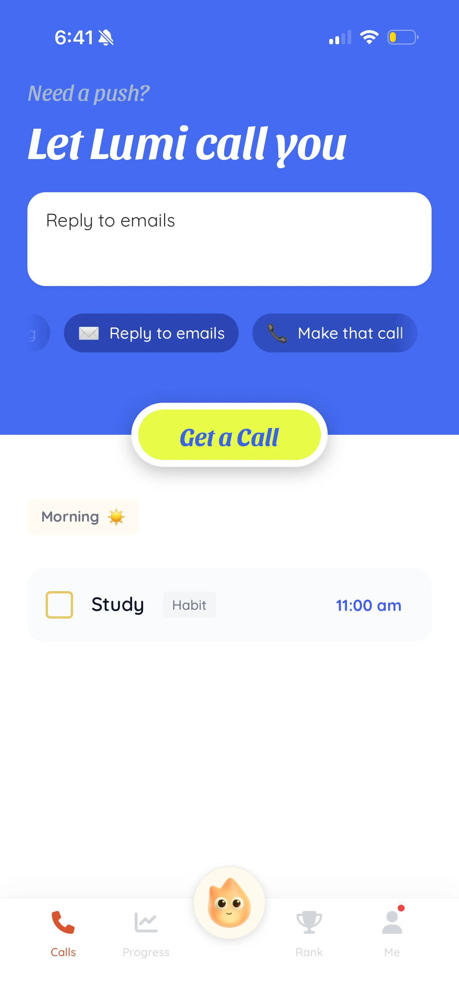
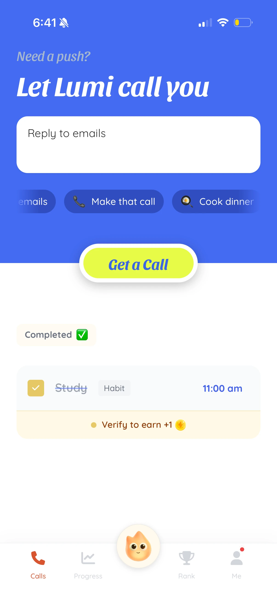
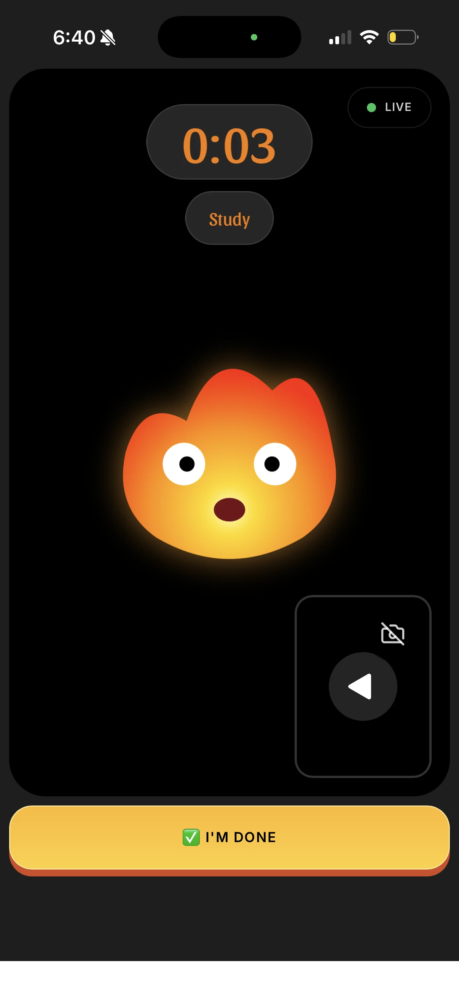
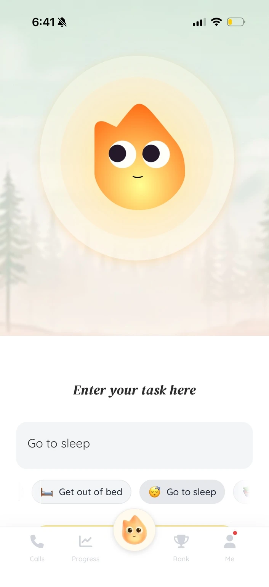

A familiar hello. A personal starting point.
Sign-in introduces Lumi’s personality. Onboarding then asks for a habit and a reminder time, turning “I should study” into something the companion can help with. Each screen asks one focused question.
Real-time support for focus, habits, and getting started.
As a founding member, I led strategy and UX efforts to make starting easier, connecting the product flow, visual design, and marketing.
The user carries the planning and the push to begin.
Name what you want to do.
Lumi is there for the next step.

Start with what’s on your mind.
One clear invitation to begin.
A companion stays with you.
Sign-in introduces Lumi’s personality. Onboarding then asks for a habit and a reminder time, turning “I should study” into something the companion can help with. Each screen asks one focused question.




On Home, the bright “Get a Call” button sits between task entry and the habit list. Users can start with what is already on their mind. After a session, the study task changes into a completed state, making the transition from planning to doing visible.


The live session gives the task a sense of shared presence, with Lumi, a timer, and an “I’m Done” action. The central companion button stays available in the bottom navigation, so users can enter a new task without setting up another habit first.


I extended Lumi’s friendly voice into launch visuals and TikTok content. Playful everyday situations gave potential users a way to recognize the problem before meeting the product. Some posts reached thousands of views, as reported by the team.
Early feedback published by Lumi points to the same need across sleep, meals, and daily routines: support at the moment of hesitation.
Sleep & wake routine“That small nudge has helped me go to bed earlier”
Early User
Focus & meals“Lumi helps me break that freeze.”
Beta User
Habit formation“It just helps me begin.”
Early Tester